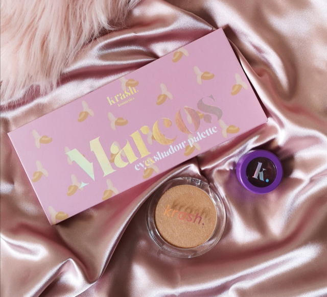

Vegan
¿Qué es?
Vegan Beauty, la galardonada marca de cosméticos veganos, está ampliando su distribución con Ulta Beauty, el minorista de belleza más grande de EE.UU. Kat Von D lanzó la marca con Kendo en 2008, pero este año anunció que se iba a centrar en otros proyectos. Desde entonces, Kendo ha cambiado la marca a KVD Vegan Beauty.
El lanzamiento actual en Ulta Beauty ha sido un conteo regresivo en los medios sociales con una banda de celebridades y partidarios influyentes. Kelly Coller, vicepresidente de marketing global y relaciones públicas de KVD Vegan Beauty declaró en un comunicado de prensa: “El truco del conteo regresivo de Instagram incluyó a más de 30 personas y animales por igual, creando un increíble zumbido para los consumidores, nuevos clientes y fanáticos de la belleza en todo el país, todos los cuales comparten el entusiasmo masivo por la llegada de KVD Vegan Beauty a Ulta Beauty. Quedamos impresionados por la lista completa de talentos que participaron”.
Beauty crea maquillaje de alto rendimiento y alto pigmento inspirado en el arte del tatuaje, como nuestro delineador de tatuajes # 1 galardonado. Pero defendemos más que solo rendimiento: nuestro maquillaje es 100% vegano y libre de crueldad animal, y nos preocupamos por el planeta. Celebramos al individuo a través de la autoexpresión artística y la creatividad ilimitada. Y sobre todo, te damos las herramientas para vivir tu verdad de belleza.
Fundada en 2008, la marca recibe su nombre de Kat Von D, experta en belleza y artista del tatuaje. A día de hoy, KVD Vegan Beauty es una marca que crea productos de alto rendimiento que permiten expresarse al máximo sin reparos. Todo comenzó con cuatro barras de labios de color rojo que revolucionaron el mundo del maquillaje tal como lo conocemos hoy.
Primera marca en elegir formulaciones veganas y sin crueldad, siempre se ha caracterizado por sus texturas de larga duración, colores intensos desde la primera pasada y una carta cromática lo suficientemente amplia como para que cada uno encuentre el color que le enamore.
Diferencia entre vegano y cruelty free
Cuando un producto se califica como "vegano", significa que no contiene ni ingredientes animales ni derivados de estos. En la primera categoría entrarían sustancias como, por ejemplo, la gelatina, el colesterol o el colágeno. En la segunda categoría, encontraríamos ingredientes como la miel, la cera de abejas o la leche.
Por lo tanto, que un producto sea vegano NO es garantía de que sea también cruelty free, pero en este caso, Vegan Beauty, sí es cruelty Free además de vegano. Por supuesto, hay infinidad de marcas que ofrecen artículos cosméticos veganos y que también son cruelty-free. Estas cuentan, además, con un certificado que lo acredita (como por ejemplo el certificado "Leaping Bunny"). También existen certificados veganos. Los productos cruelty free son aquellos que, no permiten, en ninguna de las fases del desarrollo del producto, testar sobre animales. Cuando un producto es cruelty-free, no quiere decir que sea vegano. Por ello, pueden encontrarse productos no testados en animales y que contienen ingredientes animales, como miel o leche.
 |
 |
 |
 |
|  |
 |
 |
 |